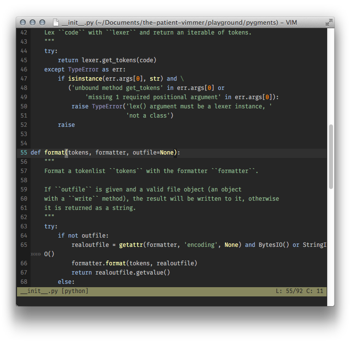
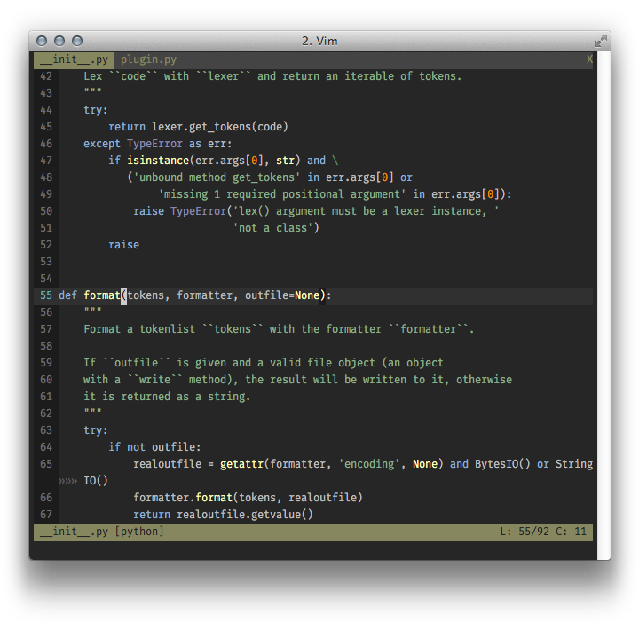
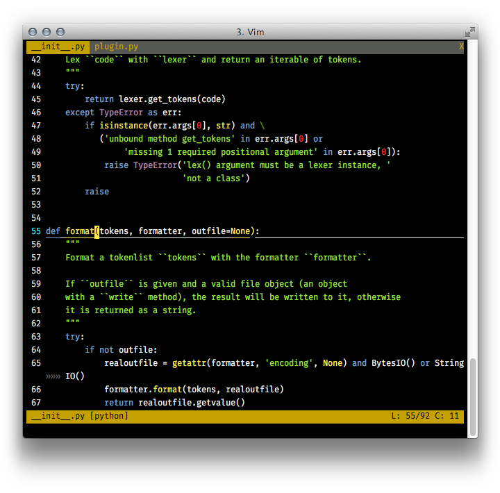
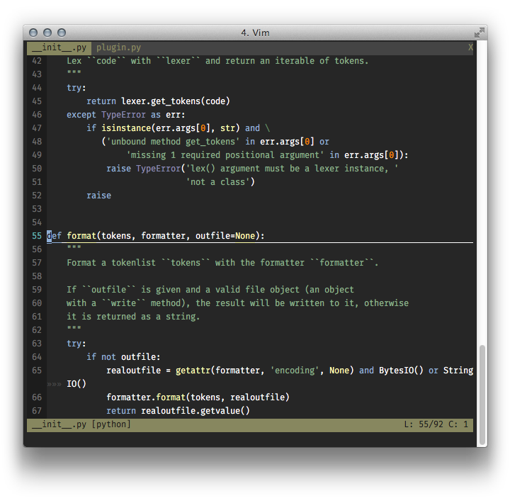

Apprentice is a dark, low-contrast colorscheme for Vim based on the awesome Sorcerer by Jeet Sukumaran.
It is essentially a streamlined version of the original, with a reduced number of colors entirely taken from the default xterm palette to ensure a similar look in 256colors-ready terminal emulators and GUI Vim.
Some code in MacVim:

Some code in iTerm, with TERM=xterm-256color:

Some code in iTerm, with TERM=xterm, using the tango color palette:

Apprentice is designed first and foremost to look “good” in terminal emulators supporting 256 colors and in GUI Vim (GVim/MacVim). It supports lesser terminal emulators in the sense that it doesn’t break but it will definitely look “better” in more capable environments.
There is nothing to do for GVim/MacVim as GUI Vim supports millions of colors by default.
Most terminal emulators in use nowadays can display 256 colors but most of them use a default TERM that tells Vim otherwise. Assuming your terminal emulator actually supports 256 colors, you must instruct it to brag about its terminal-hood by setting the correct TERM environment variable.
The “ideal” TERM usually includes the string 256color, like xterm-256color. The actual value is highly dependent on your terminal emulator and/or your terminal multiplexer, though, so you will have to refer to their manual.
As an alternative to changing your default TERM to xterm-256color or similar, you can keep its default value (usually something like xterm or screen) and set your terminal emulator to use the Apprentice colorscheme instead of its default colors.
The table below contains a subset of Apprentice’s palette. You can use a color picker or copy/paste these values:
| Intensity | Normal | Intensity | Bright |
|---|---|---|---|
0 | #1C1C1C | 8 | #444444 |
1 | #AF5F5F | 9 | #FF8700 |
2 | #5F875F | 10 | #87AF87 |
3 | #87875F | 11 | #FFFFAF |
4 | #5F87AF | 12 | #8FAFD7 |
5 | #5F5F87 | 13 | #8787AF |
6 | #5F8787 | 14 | #5FAFAF |
7 | #6C6C6C | 15 | #FFFFFF |
Foreground color | #BCBCBC | Background color | #262626 |
Here is a sample ~/.Xresources for you Linux/BSD users:
*.foreground: #BCBCBC *.background: #262626 *.color0: #1C1C1C *.color8: #444444 *.color1: #AF5F5F *.color9: #FF8700 *.color2: #5F875F *.color10: #87AF87 *.color3: #87875F *.color11: #FFFFAF *.color4: #5F87AF *.color12: #8FAFD7 *.color5: #5F5F87 *.color13: #8787AF *.color6: #5F8787 *.color14: #5FAFAF *.color7: #6C6C6C *.color15: #FFFFFF
Some code in iTerm, with TERM=xterm, using the color palette above:

For best results, it is recommended to adjust your background color to the one used in the GUI/256color version of Apprentice:
235#262626The canonical location is:
~/.vim/colors/apprentice.vim
but it could be:
~/.vim/bundle/apprentice/colors/apprentice.vim
or whatever works for you.
To test Apprentice, just type this command from normal mode and hit Enter:
:colorscheme apprentice
If you like what you see and want to make Apprentice your default colorscheme, add this line to your ~/.vimrc:
colorscheme apprentice
;-)
If light colorschemes are more your thing, Disciple is an experimental and mostly unmaintained negative version of Apprentice.